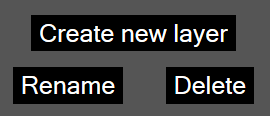

The
layer manipulation controls
provide controls for creating new
raster layers, renaming layers, and deleting layers.
- Clicking the
create new layer
button creates a new raster layer and adds it to the
layer list.
- The
rename
button allows for the selected layer to be renamed. Clicking the buttons opens a prompt, in which the user can enter a new name.
- The
delete
button deletes the currently selected layer, removing it from the layer list and the canvas.